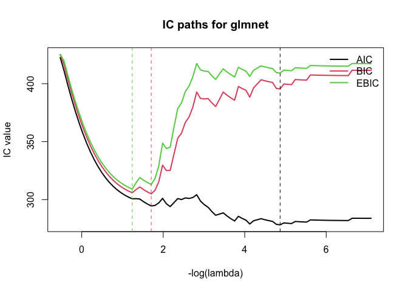

ICtoolkit provides a unified interface for computing five information criteria across four model classes, plus a flexible stepwise selection function.
| Criterion | Function | Reference |
|---|---|---|
| AIC | compute_aic() |
Akaike (1974) |
| AICc | compute_aicc() |
Hurvich & Tsai (1989) |
| BIC | compute_bic() |
Schwarz (1978) |
| EBIC | compute_ebic() |
Chen & Chen (2008) |
| RBIC | compute_rbic() |
Peterson & Cavanaugh (2026+) |
Supported model classes: lm, glm, glmnet, ncvreg. For glmnet and ncvreg, each criterion returns a vector of length length(lambda) — one value per point on the regularization path.
Installation
# Development version from this repository:
devtools::install_github("petersonR/ICtoolkit")
# Or once on CRAN:
install.packages("ICtoolkit")Quick start
IC for lm / glm
library(ICtoolkit)
fit <- lm(mpg ~ wt + hp + cyl, data = mtcars)
compute_aic(fit)
#> [1] 155.4766
#> attr(,"fit_class")
#> [1] "lm"
#> attr(,"k")
#> [1] 4
#> attr(,"criterion")
#> [1] "AIC"
compute_bic(fit)
#> [1] 162.8053
#> attr(,"fit_class")
#> [1] "lm"
#> attr(,"k")
#> [1] 4
#> attr(,"criterion")
#> [1] "BIC"
compute_ebic(fit, P = 10) # P = total candidate predictors
#> [1] 165.1744
#> attr(,"fit_class")
#> [1] "lm"
#> attr(,"k")
#> [1] 4
#> attr(,"criterion")
#> [1] "EBIC"
#> attr(,"gamma")
#> [1] 0.247425
#> attr(,"P")
#> [1] 10Results carry informative attributes:
result <- compute_bic(fit)
attr(result, "fit_class")
#> [1] "lm"
attr(result, "k")
#> [1] 4
attr(result, "criterion")
#> [1] "BIC"IC over the regularization path (glmnet)
library(glmnet)
#> Loading required package: Matrix
#> Loaded glmnet 4.1-10
n <- 100
p <- 50
set.seed(1)
X <- matrix(rnorm(n * p), n, p,
dimnames = list(NULL, paste0("x", 1:p)))
y <- X[, 1] * 2 - X[, 3] * 0.25 + rnorm(n)
fit_glmnet <- glmnet(X, y)
# plot_ic_path computes + plots IC paths in one call.
plot_ic_path(fit_glmnet, criteria = c("AIC", "BIC", "EBIC"),
main = "IC paths for glmnet")
RBIC for grouped predictors
RBIC applies group-specific EBIC penalties — useful when predictors have a natural structure (e.g., main effects vs. interactions, or different data modalities):
P_index <- list(
main = c("wt", "hp", "disp"),
categorical = c("cyl", "gear", "carb", "am", "vs")
)
compute_rbic(fit, P_index = P_index)
#> [1] 163.708
#> attr(,"fit_class")
#> [1] "lm"
#> attr(,"k")
#> [1] 4
#> attr(,"criterion")
#> [1] "RBIC"
#> attr(,"gamma")
#> [1] 0.1666667
#> attr(,"P_index")
#> attr(,"P_index")$main
#> [1] "wt" "hp" "disp"
#>
#> attr(,"P_index")$categorical
#> [1] "cyl" "gear" "carb" "am" "vs"Stepwise selection with ic_step()
ic_step() generalises MASS::stepAIC to all five criteria:
fit_null <- lm(mpg ~ 1, data = mtcars)
fit_full <- lm(mpg ~ ., data = mtcars)
selected <- ic_step(
fit_null,
scope = list(lower = fit_null, upper = fit_full),
direction = "both",
criterion = "BIC",
trace = 0
)
formula(selected)
#> mpg ~ wt + cyl
# The selection path is stored as an attribute
attr(selected, "step_path")
#> step action BIC
#> 1 0 <start> 211.6870
#> 2 1 + wt 170.4266
#> 3 2 + cyl 161.8730This repository was drafted by Ryan Peterson. It has been refined using Claude 4.6.